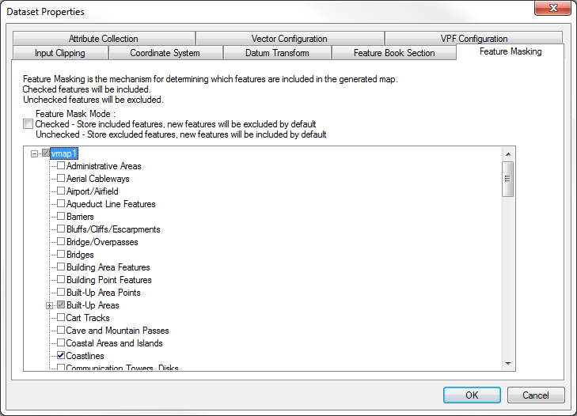

The mechanism for excluding features from the generated map is called Feature Masking.
Feature Masking can be applied at the Dataset level, and will instruct MapLink Pro Studio which features to include and which to exclude from the Layer.
The Feature Mask Mode determines how features are handled when loaded from the source data
When the Feature Mask Mode is Unchecked, initially all features, in the source data, are included in the Layer, i.e. appear in the Feature Masking tree as checked and are displayed with the rendering setup in the associated Feature Book Section (default rendering if new features).
With the Feature Mask Mode is Checked, all features, in the source data, are initially excluded from the Layer, i.e. appear in the Feature Masking tree as unchecked and are not displayed. The features will be added to the Feature Book Section as normal.
The Default Feature Mask Mode is set on the Options Map Creation page.
 To exclude or include features from a Dataset
To exclude or include features from a Dataset
- Select the Dataset
- Use Dataset | Feature Masking... to open the Feature Masking page
- Find the feature to be masked in the Feature Tree displayed
- Toggle the check box on to include the feature or off to exclude the feature.
- Press OK to accept the changes
- Reload the layer to see the changes, if automatic data loading is not enabled.
Copyright © 1998 to 2025 by Envitia Group PLC.